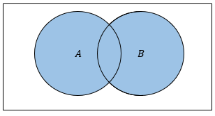
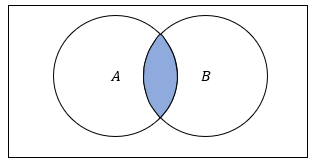
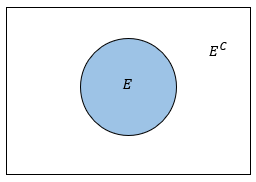
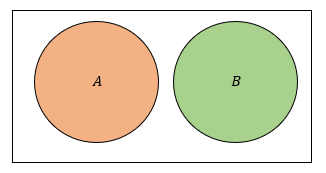
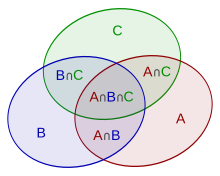

Definition 7.1
The union of two events \(A\) and \(B\) consists of all outcomes in \(S\) that are in either \(A\) or \(B\).
\[A \cup B = \{x \in S: x \in A \lor x \in B\}\]
For the union of more than two events, \(E_1, E_2, \dots, E_k\), we write \(\cup_{i=1}^k E_i\).

A Venn diagram showing two overlapping circles labeled A and B, illustrating the intersection of two sets.
Definition 7.2
The intersection of two events \(A\) and \(B\) consists of all outcomes in \(S\) that are in both \(A\) and \(B\).
\[A \cap B = \{x \in S: x \in A \land x \in B\}\]
For the intersection of more than two events, \(E_1, E_2, \dots, E_k\), we write \(\cap_{i=1}^k E_i\).

Venn diagram showing two overlapping circles labeled A and B, with their intersection highlighted in blue.
Definition 7.3
The complement of the event \(E\) is all outcomes in \(S\) that are not in \(E\) and is denoted as \(E^C\).
\[E^C = \{x \in S: x \notin E\}.\]

A Venn diagram showing a blue circle labeled ‘E’ inside a white rectangle. Outside the circle is labeled ‘E^C’.
Definition 7.4
Events \(A\) and \(B\) are said to be disjoint (or mutually exclusive) events if they do not share any elements. In other words, \(A\) and \(B\) are disjoint events if the following is true:
\[x \in A \Rightarrow x \notin B\]
and
\[x \in B \Rightarrow x \notin A\]

Two non-overlapping circles labeled A and B, orange and green respectively, inside a rectangular border.
Unions and intersections of sets are commutative:
\[A \cup B = B \cup A\]
\[A \cap B = B \cap A\]
associative:
\[(A \cup B) \cup C = A \cup (B \cup C)\]
\[(A \cap B) \cap C = A \cap (B \cap C)\]
and distributive:
\[(A \cup B) \cap C = (A \cap C) \cup (B \cap C)\]
\[(A \cap B) \cup C = (A \cup C) \cap (B \cup C)\]
Theorem 7.1
Let \(A\) and \(B\) be two sets corresponding to events. De Morgan’s Laws are stated as follows:
\[(A \cap B)^C = A^C \cup B^C\]
\[(A \cup B)^C = A^C \cap B^C\]
Let \(E \subseteq S\) where \(S\) is the sample space. A probability measure \(P\) on \(S\) must satisfy the following 3 properties:
Theorem 7.2
The general addition rule for probability states that for any \(A\) and \(B\), the probability that \(A\) or \(B\) occurs is
\[P(A \cup B) = P(A) + P(B) - P(A \cap B)\]
The union of \(A\) and \(B\) can be written in three different ways, each a union of disjoint events.
\[ \begin{align} A \cup B &= B \cup (B^C \cap A) \\ &= A \cup (A^C \cap B) \\ &= (B^C \cap A) \cup (A \cap B) \cup (A^C \cap B) \end{align} \]
Then, by the third axiom, we have:
\[ \begin{align} P(A \cup B) = &P(A) + P(A^C \cap B) + \\ &P(B) + P(B^C \cap A) - \\ &P(A^C \cap B) - P(B^C \cap A) - P(A \cap B) \\ = &P(A) + P(B) - P(A \cap B) \end{align} \]
Example 7.1
In a deck of 52 playing cards, what is the probability of drawing either a red card (hearts or diamonds) or a king?
The probability of drawing a red card is \(\frac{26}{52}\). The probability of drawing a king is \(\frac{4}{52}\). The probability of drawing a red king is \(\frac{2}{52}\). So the final probability is:
\[\frac{26 + 4 - 2}{52} = \frac{28}{52} \simeq 0.5385\]
Example 7.2
In a class of 30 students, 18 students are taking math and 12 students are taking physics. If 5 students are taking both math and physics, what is the probability that a randomly selected student is taking either math or physics?
The probability that someone takes math is \(\frac{18}{30}\) and the probability they take physics is \(\frac{12}{30}\). Since the probability they take both is \(\frac{5}{30}\), the final probability is:
\[\frac{18}{30} + \frac{12}{30} - \frac{5}{30} = \frac{25}{30} \simeq 0.8333\]
Example 7.3
In a class of 30 students, 18 like to play video games (event \(A\)) and 12 are majoring in computer science (event \(B\)). If 8 students are computer science majors and like to play video games, what is the probability that a randomly selected student either likes to play video games or is a computer science major?
Theorem 7.3
Let \(A\), \(B\), and \(C\) be three events. Then the probability that at least one of the events occurs, \(P(A \cup B \cup C)\), is:
\[ \begin{align} P(A \cup B \cup C) = &P(A) + P(B) + P(C) - \\ &P(A\cap B) - P(A \cap C) - P(B \cap C) + \\ &P(A \cap B \cap C) \end{align} \]
For the proof of this theorem, define \(B^* = B \cup C\) and then apply the general addition rule for \(P(A \cup B^*)\).
We can visualize the inclusion-exclusion principle for three events using a Venn diagram.

Venn diagram with three overlapping circles labeled A, B, and C, showing all possible intersections and unique areas in different colors.
Example 7.4
In a survey of 500 people, 300 like apples, 200 like oranges, and 150 like bananas. Additionally, 100 people like both apples and oranges, 80 people like both oranges and bananas, and 60 people like both apples and bananas. If 40 people like all three fruits, what is the probability that a randomly selected person likes at least one of the three fruits?
By applying the inclusion-exclusion principle to three sets, we find that the probability is:
\[P(A \cup B \cup C) = \frac{300+200+150-100-80-60+40}{500} = \frac{450}{500} = 0.9\]
Example 7.5
In a class of 600 students, 400 like chocolate, 350 like vanilla, and 300 like strawberry ice cream. Additionally, 250 students like both chocolate and vanilla, 200 like both vanilla and strawberry, and 150 like both chocolate and strawberry. If 100 students like all three flavors, what is the probability that a randomly selected student likes at least one of the flavors?
Sometimes it can be easier to find the complement of an event. Then we can find the probability of interest using the following:
Theorem 7.4
The probability of an event \(P(E)\) is equal to \(1-P(E^C)\) where \(P(E^C)\) is the probability of the complement of the event \(E\).
The proof is done by writing the sample space as the union of \(E\) and its complement \(E^C\) and using the second and third axioms.
\[ \begin{align} E \cup E^C &= S \\ P(E \cup E^C) &= P(S) = 1 \\ P(E) + P(E^C) &= 1 \\ P(E^C) &= 1-P(E) \end{align} \]
Example 7.6
In a deck of 52 cards, let event A be drawing a card that is a heart and event B be drawing a card that is a face card. In words, how would you describe the complement of the union of events A and B?
The complement of the union of events A and B would be selecting a card that is neither a face card, nor is it a heart. This corresponds to \((A \cup B)^C = A^C \cap B^C\).
Example 7.7
In a random experiment of rolling a fair die multiple times how would you describe the complement of the event “rolling at least one 4”?
The complement of this event would be not rolling any 4’s since rolling a 4 on any of the rolls would correspond to the event “rolling at least one 4”.
Example 7.8
You flip a coin 6 times, what is the probability that at least one of the flips is a head?
Example 7.9
What is the probability of rolling at least one even number in two rolls of a fair six-sided die?
Example 7.10
Jane is going on vacation and bringing two books. The probability she likes the first book (\(A\)) is 0.3 and the probability she likes the second book is 0.5 (\(B\)). The probability she likes both books is 0.25. What is the probability she likes neither book?
Example 7.11
Assume that there are only 365 days in a year and each day is equally likely to be someone’s birthday. In a room of 30 people, what is the probability that at least 2 of them share a birthday?